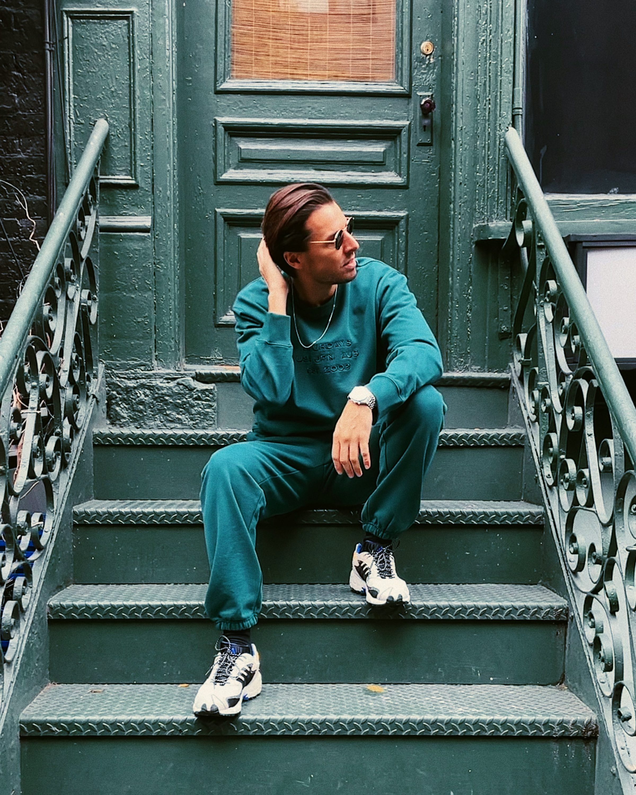

Starting with this one.
Co-founder of two startups and a creative studio. Previously Design Director at Disney, now VP of Global Brand & Creative at Podimo, where I build brands around creators, shows and products, and the people behind them. Based in Copenhagen, working across EMEA and the US.
"Nicolai's superpower is converting personalities, businesses and tech propositions into compelling, coherent and creative brands. He understands that brand goes far beyond how a company looks or what happens in its advertising, and knows how to develop brand and drive brand-led strategies through every part of a company's present and future commercial form."
"Nicolai is one of the most talented creative leaders I've worked with. He has an exceptional ability to combine strategic thinking, creativity, and execution, while leading teams with trust, clarity, and ambition."
My mandate at Podimo runs across three lanes, delivered by a global team with local creatives in six markets. Underneath it sits a campaign portfolio that treats shows like brands: tentpoles that build creator super-brands, acquirers that convert, engagers that retain, and key cultural moments that keep the conversation going. The throughline is work that stays culturally relevant and commercially accountable, the way Undergrunden turned a hidden world into national conversation and proved it in the numbers.
Master brand, sub-brands, and vertical identities built as one coherent system, designed to flex across markets without losing itself.
Tentpole moments that shape market position and build super-brands around shows, creators, and verticals.
A continuous creative engine feeding acquisition, engagement, and retention, iterated fast against live performance data.
Great work at pace isn't heroics, it's infrastructure. I run a standing loop between creative and growth that starts upstream of the ads, with finding the story inside a show, a creator or a moment, and only then building it out across the funnel. Proven formats iterate on signal (hook, hold, conversion), new bets test head to head, and every asset ends in a decision. Optimise, scale, re-test, or kill. Same team, 6.5 times the creative output and a quarter of the post-production time per asset, with two to three net-new top-funnel bets produced and tested head to head every month, proven in Denmark first and then scaled. Every cycle closes on five questions: what did we test, what did we expect, what did the data show, what did we learn creatively, and what's next.
VoiceNotes started as one of the monthly top-funnel bets. It won its test, then became the always-on format across five markets.
The best asset of the year hit 53.4% hook and 7.44% CTR. Summer26, the next bet through the loop, beat VoiceNotes on social interaction. The system keeps producing the thing that replaces the last winner.
"Nicolai is a brilliant creative mind who leads with inspiration, inclusion and care. He has taken our brand and creative function from a small production unit to an actual global brand and creative team delivering across our markets. He also has a rare way with creators, they trust him, and he gets them on board with big, ambitious ideas. He's been instrumental in building Podimo's brand, and a joy to work with!"

I fall in love with ideas, then hold them accountable. Everything we make is built, measured, and iterated against real outcomes, never shipped and forgotten. At Podimo I've built Brand & Creative into a 30-person global team across six markets, repositioned the business from podcast platform to entertainment house, and built the campaign portfolio that turns show launches into a repeatable, culturally local system.
Before that I directed brand vision at Disney, most notably for Star Wars: Galaxy's Edge, a $2B world across two parks. I personally authored the global style guide that governed it. I lead through people and systems in equal measure: hire strong, complementary talent, trust their skills, and give creativity an engine so the best ideas ship fast and keep shipping.
The School of Visual Communication, Denmark, 2005–2008
"...and whenever a room was on fire, Nicolai was the calm one still holding the bar high."